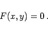
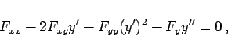
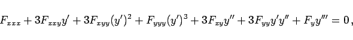

Inhalt Index DeskTop Bronstein

 Differentialrechnung Differentiation von Funktionen von mehreren Veränderlichen Differentiationsregeln für Funktionen von mehreren Veränderlichen Differentiation impliziter Funktionen
Differentialrechnung Differentiation von Funktionen von mehreren Veränderlichen Differentiationsregeln für Funktionen von mehreren Veränderlichen Differentiation impliziter Funktionen


Eine Funktion von einer Veränderlichen y = f(x) sei gegeben durch die Gleichung
|  | (6.54a) |
Durch Differentiation dieser Gleichung nach x ergibt sich mit Hilfe von (6.52b)
Differentiation von (6.54b) liefert auf die gleiche Weise
|  | (6.54d) |
so daß man unter Berücksichtigung von (6.54b) erhält
Durch analoges Vorgehen berechnet man
|  | (6.54f) |
was unter Beachtung von (6.54c) und (6.54e) nach y''' aufgelöst werden kann.